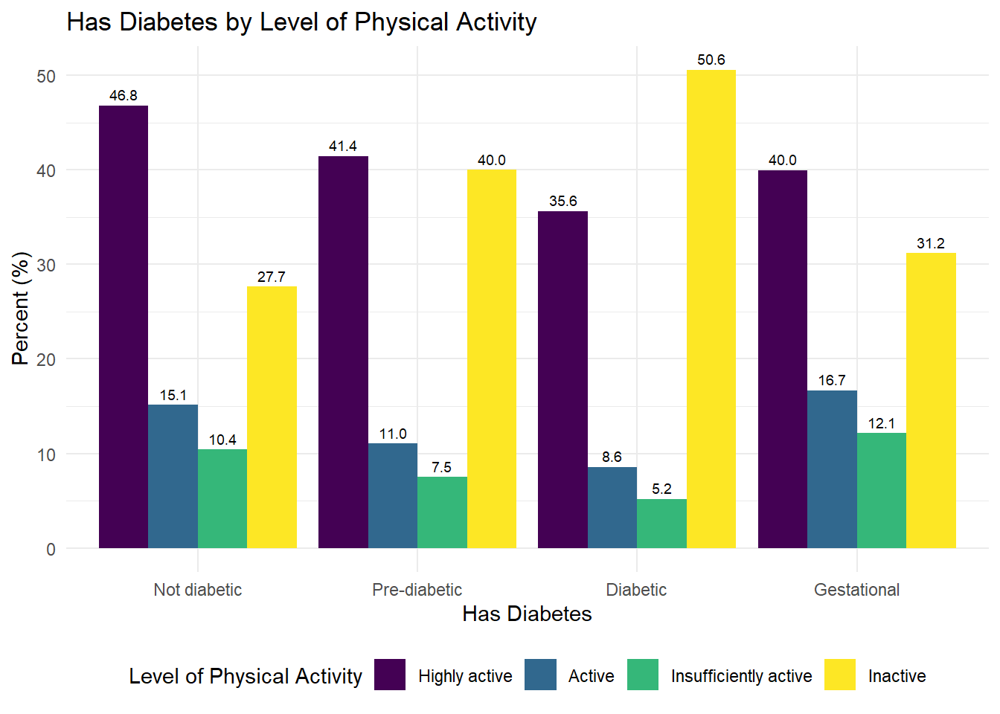
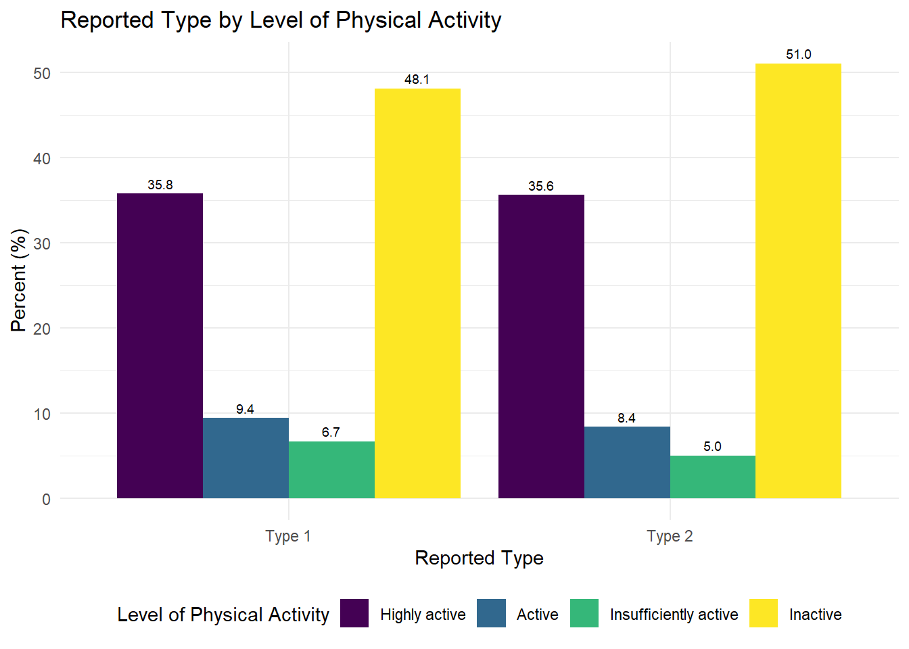
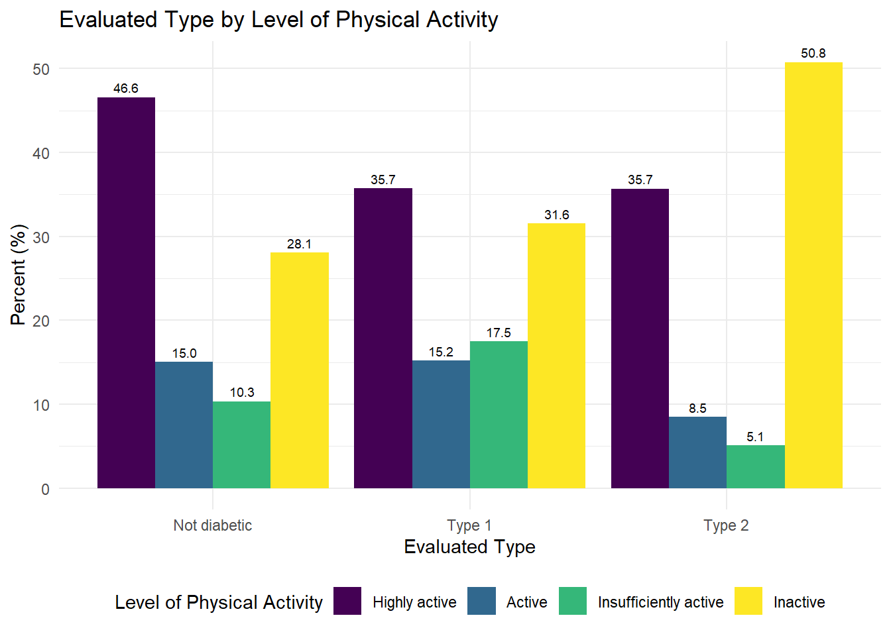
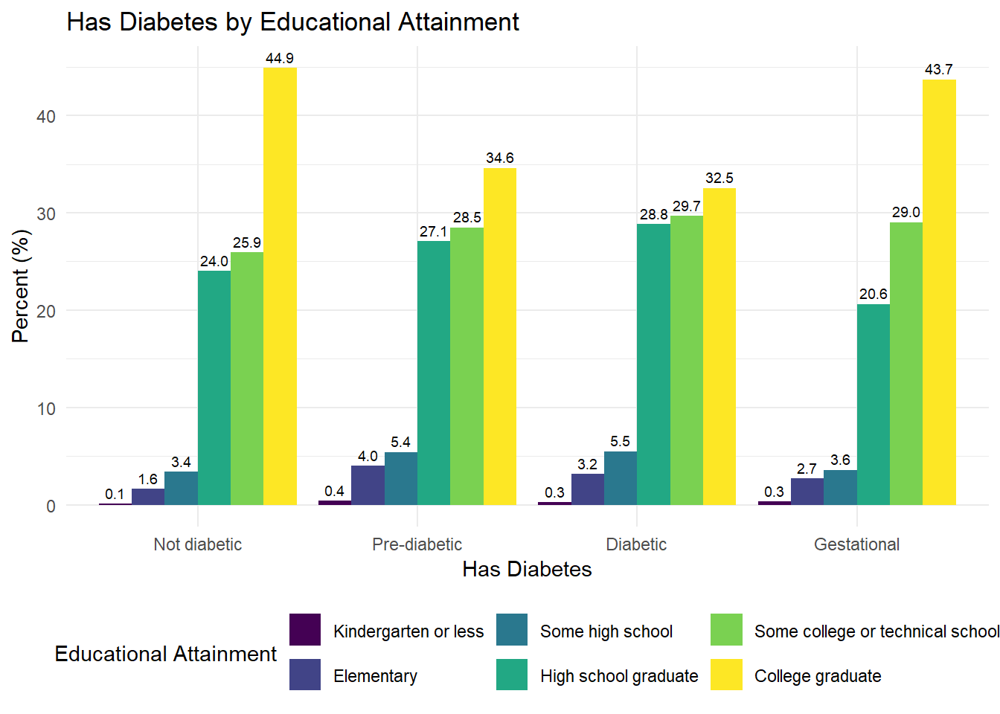
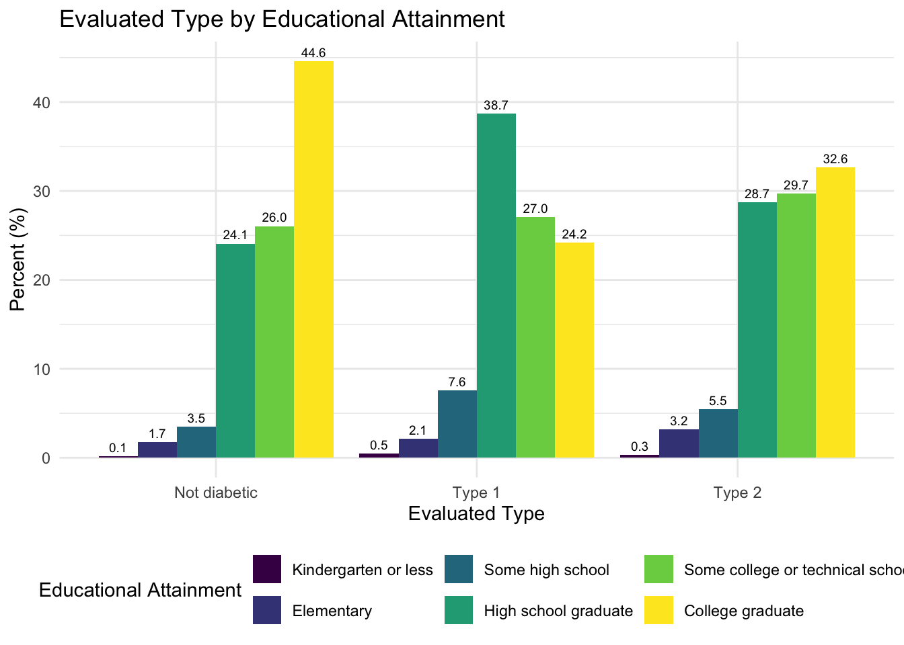
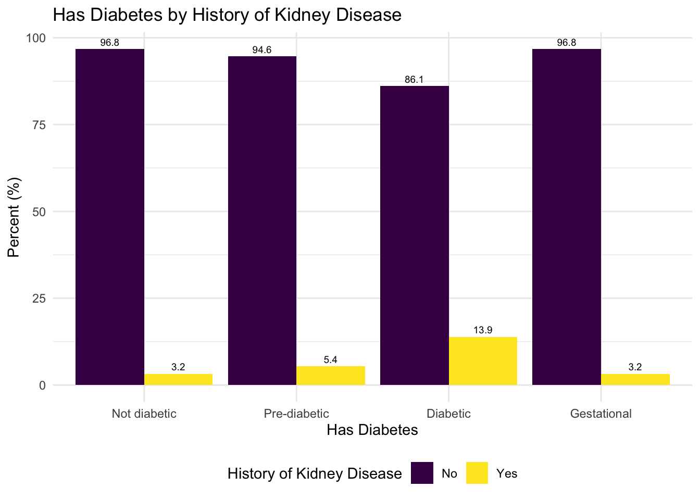
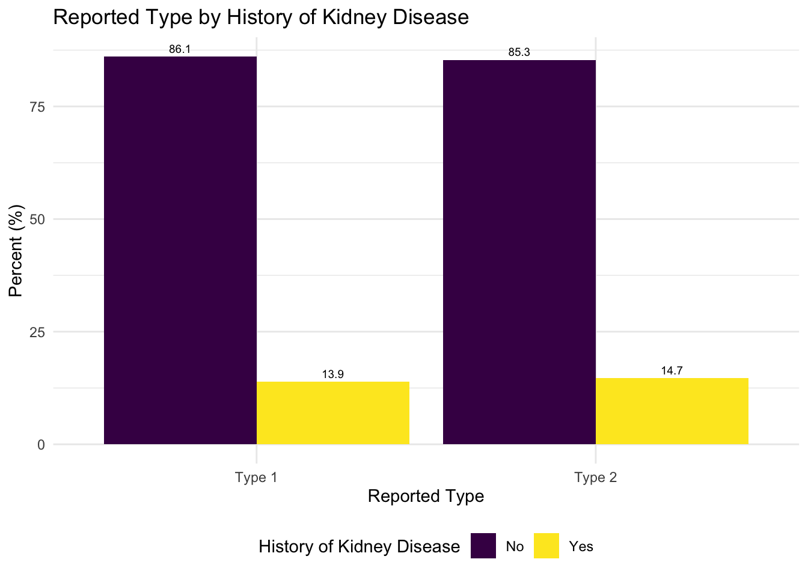
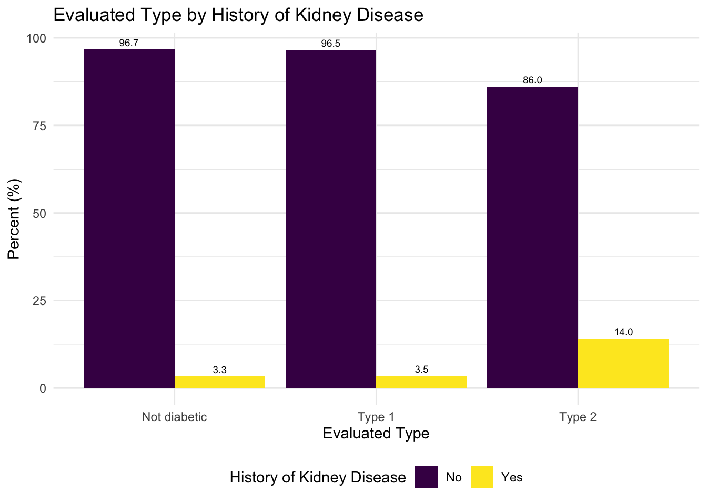
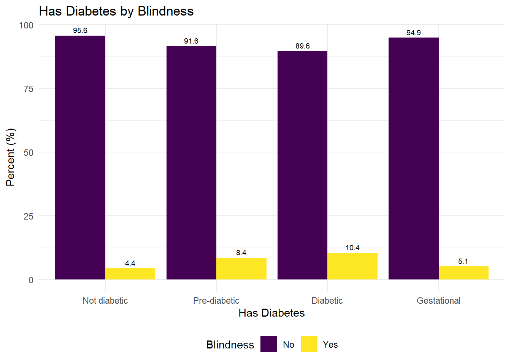
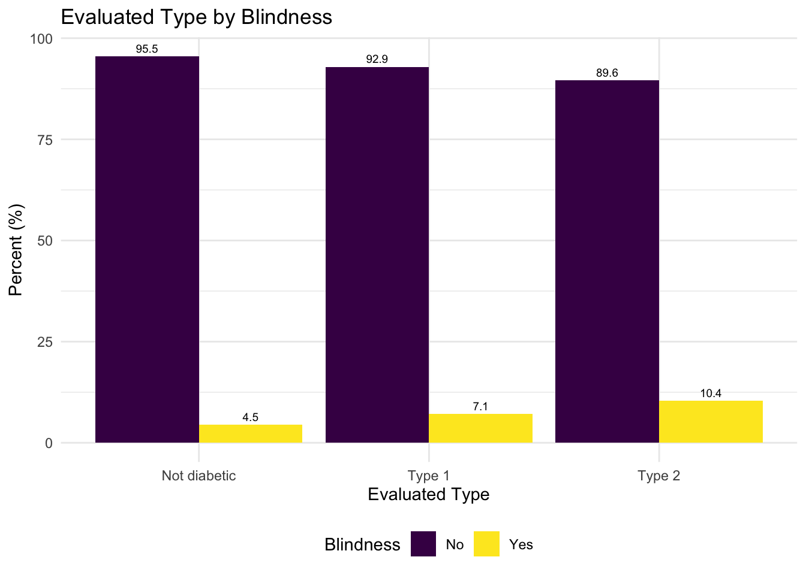

Final Report
Overview
In this project, we aim to analyze Type II Diabetes (T2D) in the U.S. Our group’s inherent interest in public health and chronic disease epidemiology prompts us to explore the context of T2D in this project. Our analysis is informed by a non-scoping literature review to understand previous analysis performed on the distribution and prevalence of T2D in the United States. Most relevantly, our approach and reasoning for the variables we chose for our EDA and regression models are inspired by Cicek et al.(2021) in their paper. In addition, all group members are simultaneously enrolled in BIST8130: Biostatistical Methods I. As such, we wanted to apply the statistical analysis skills and methods learned in that class, to this project.
Motivation
T2D is among the leading causes of mortality in the U.S. Through our project, we want to consider potential the impact of covariates and comorbidities through linear and multivariate regression models.
Guiding Questions
Through our analysis, we aim to answer the following questions:
- How prevalent is diabetes in the United States, as well as the prevalence of Type 2 diabetes in particular?
- Which lifestyle factors and comorbidities have the strongest relationship with T2D? Is it justified to make generalizations about the age of onset for Type 2 Diabetes?
- By analyzing our data source, can we draw conclusions about how comprehensive common T2D questionnaires are?
Data
Source
Our data comes from the Behavioral Risk Factor Surveillance System (BRFSS) [https://www.cdc.gov/brfss/annual_data/annual_2023.html] developed and aggregated by the US Centers for Disease and Prevention (CDC). The data captures diabetes data as related to demographics, individual behaviors, chronic health conditions, health-care access, and use of preventive services. This longitudinal survey has been collecting data since 1984, and was recently updated in September 2024. The data was only available in an ‘xpt’ format. Hence, to make the data accessible for import and analysis in R, the haven package was used to read the xpt file and then write into an accessible csv format.
The Behavioral Risk Factor Surveillance System (BRFSS) was a nationwide survey conducted by the Centers for Disease Control and Prevention (CDC) to gather data on health-related risk behaviors, chronic health conditions, and preventive health practices among adults in the United States. The primary purpose of the BRFSS was to inform public health policy, monitor health trends, and support the development of health interventions. It was one of the largest continuously conducted telephone health surveys in the world, providing critical insights into the health status and needs of U.S. residents. The BRFSS used Computer-Assisted Telephone Interviewing (CATI) systems to collect data, with respondents selected through a probability sampling method to ensure results are representative of the U.S. adult population. In 2023, 54 states and territories participated, though data from Pennsylvania and Kentucky were excluded due to insufficient collection. Data collection occurred year-round, spanning all 12 months, and interviews were conducted seven days a week, both during the day and in the evening, to maximize response rates. Interviews lasted an average of 17 minutes for the core questionnaire, with additional time required for optional modules and state-specific questions. The survey incorporated both landline and cellular samples, adjusting for demographic factors such as age, gender, race/ethnicity, education, and marital status through a process known as iterative proportional fitting or raking. This methodology ensured that the BRFSS data was nationally representative and reflective of the diverse U.S. population, making it a valuable tool for understanding and addressing public health challenges.
Import
To clean the data, we first had to import the large XPT file and select only the variables we were interested in analyzing related to diabetes. We selected variables after conducting a thorough literature review to identify which factors and comorbidities were the most relevant to a diabetes (and specifically T2D) diagnosis.
Cleaning
For the coding process of cleaning the data, we recoded variables
with responses such as “refusal”, “don’t know/not sure”, and missing as
NA. Binary variables were converted from (0,1) to (No, Yes). Other
variables, including binary variables, were also re-coded as factor
variables. We identified three main variables for analysis related to
diabetes: has_diabetes, diab_type, and
eval_type.
has_diabetes: This variable describes
the people in the survey who responded after being asked the question,
“Have you ever been told you had diabetes?” Overall, 432,339 people
responded to this question.
diab_type: This variable comes directly
from the dataset, where respondents who were diabetic per the
has_diabetes question were asked “What type of diabetes do
you have?” Only 22,027 participants answered this question out of the
59,786 people who responded that they had diabetes. Since there are over
60% of respondents unaccounted for, this measure may not tell us enough
about risk factors or comorbidities of T2D in the general
population.
eval_type: Due to the missing data for
diab_type, we created another variable
eval_type that describes the person’s diabetes type by
using other demographic information from this dataset. We used this paper
published by the CDC that used the same BRFSS survey from 2014 to
classify T2D diagnosis. In this paper, they classified a survey
respondent to have type II diabetes if the respondent was older than 30,
not pregnant, and answered yes to the question “Have you ever been told
you have diabetes?”
We then classified a respondent to have type II diabetes if the
respondent was older than 30, not pregnant, and were diabetic as per the
has_diabetes question. We classified a respondent to have
type I diabetes if the respondent was younger than 30 and were diabetic
as per the has_diabetes question.
The final cleaned dataset cleaned_diabetes_data.csv
contains 40 columns and 433,323 rows. To access this data, users can
find it in our GitHub repo at
data/cleaned_diabetes_data.csv. A metadata table with a
description and coding of each variable in the cleaned dataset can be
found in Appendix A.
Exploratory Data Analysis
Overall distribution
We started by examining the overall distributions of each of our outcome variables.

Of the 433,323 respondents, 59,786 are actually diabetic.


Of the people that said they had diabetes, we have just over ~20K responses regarding the type of diabetes they have, and over ~410K missing responses. Because of this missing data, we more heavily relied on the evaluated type. However, it is worth noting that we are actively excluding people diagnosed with type I diabetes after the age of 30 (as shown below).


In the graphs above, we could conclude that the overall distribution is relatively normal related to the age of onset of diabetes diagnosis. However, if we just consider real-time age and diabetes, we see a different distribution. In the graph below, we see that as age increases, the count of diabetes cases increase (using the has_diabetes variable), with the highest number of cases being in the 65-74 age group. The number of diabetes cases decrease slightly after age 74.

Demographics
We also explored other demographic information in relation to diabetes diagnosis. We compared each factor to one of our three outcome variables, has_diabetes, diab_type, and eval_type, to identify the overarching relationship between specific demographics and diabetes, along with similarities and differences between the various kinds of diagnosis.



People with better health and physical activity practices have fewer diabetes diagnoses. Between type I and type II diagnoses, physical activity is about the same, based on the reported type. On the other hand, type II diagnoses have a higher percentage of inactive people, based on the evaluated type.


People with (at least) a college degree make up a larger proportion of the sample of people who are not diabetic than the sample of people who are diabetic. Surprisingly, according to the evaluated type variable, a significantly larger percentage of people who graduated high school have type I diabetes, compared to the percentage of people who graduated high school with type II diabetes.
Comorbidities
Finally, we explored comorbidities known to be shared with diabetes diagnosis.



A larger proportion of people with diabetes also have kidney disease than other groups. The reported type shows no significant difference in diagnosis across type of diabetes, but the evaluated type shows that people with kidney disease are more highly represented in the group with type II diabetes.



Blindness is slightly more common in people who have diabetes compared to people who are not diabetic, but we see some opposition between reported and evaluated type I and II diabetes status.
Additional Analysis
Due to the formatting and order of the questions in the questionnaire, some variables were only asked of certain people, leading to a large amount of missing values. Since so much of our data was missing, we decided to run some tests for the significance of the missing data. First we ranked the variables of interest by rate of missingness. We decided to keep those that had at least 80% of the data present. Next, we used the chi square test for missingness to compare variables with differing rates of missingness and see if they could be interacting or if their missingness could be related (not at random). After these tests, we found possible interactions between COVID-19 and bronchitis, both of which are independently known to increase diabetes risk. We ran one more chi square test to make sure this interaction was statistically significant.
At this point we created two Generalized Linear Models (GLM) using sex, age, obesity, race, good health, kidney disease, stroke, bronchitis, and COVID-19 as main effects, with COVID-19 and bronchitis as an interaction. We chose this model to try to prevent overfitting and handle distributions that are not Gaussian, such as that of variables like age, which is skewed due to Type 2 Diabetes being more common in older adults.
The first GLM models the risk of any type of diabetes, and the second one models the risk of Type 2 Diabetes in particular. We encountered a significant limitation for the second model because almost 100 times as many people reported Type 2 Diabetes as opposed to Type 1, so our model as proposed converged and was not significant in analyzing comparative risk.
Some other limitations for regression include linearity, independence, multicollinearity, and homoscedasticity. Predictors and outcomes may have a non-linear relationship, and our model may not properly account for those. Additionally, outliers and observations being dependent on each other can cause misleading results. Multicollinearity, or predictors being correlated with one another, can also inflate standard error and coefficient estimates. Additionally, if the variance of residuals is not constant, or not homoscedastic, our results could be biased.
Overall, the limitations of any regression model will always be that regression does not establish causation. Despite our efforts to test significant relationships, changes in a predictor cannot be correlated with changes in the outcome based purely on this model. However, regression models remain an essential tool to help us predict risk and inform further research.
Discussion
How prevalent is diabetes in the United States, as well as the prevalence of Type 2 diabetes in particular?
Overall, the prevalence of diabetes in 2023 across the U.S. and its
territories was 13.8%, assuming our dataset was representative of this
population. The lowest prevalence of diabetes was in Colorado (9.3%) and
the highest prevalence was in West Virginia. Of the people with
diabetes, reportedly over 90% have type II diabetes (based on the
results of the diab_type outcome). Using our evaluation of
diabetes type (eval_type), 98% of people in the US have type II
diabetes.
Which lifestyle factors and comorbidities have the strongest relationship with T2D? Is it justified to make generalizations about the age of onset for Type 2 Diabetes?
As investigated in our exploratory data analysis, we identified multiple comorbidities and lifestyle factors that have a high correlation with a diabetes diagnosis, and some also with a specifically significant relationship with type II diabetes. People with less than good health and generally inactive physical lifestyles are more represented in the diabetic group. Less than good health tend to be similar across types, but lower physical activity is more heavily represented in the type II group. Overall, we can note that the type I and type II split are fairly similar for all lifestyle factors, but generally, since the split is higher in our evaluated type variable (98% type II vs. 2% type I), there is higher representation of every comorbidity or lifestyle in the type II group.
Two factors that did not follow this pattern were depression and blindness. In both of these cases, respondents who answered yes were represented more in the type I group than the type II group. It is worth noting that the results were very similar across all groups for has_diabetes, as well as both types for diab_type. Therefore, these results may have been skewed by other factors, such as age, pregnancy status, and gender, all of which were also determinants for the evaluated type variable.
By analyzing our data source, can we draw conclusions about how comprehensive common T2D questionnaires are?
The best way that we were able to analyze the data source was by comparing these different outcome variables. Overall, has_diabetes performed well in our models and led to generally fair models. However, as seen in our EDA, there were some differences in performance for evaluated and reported type.
Overall, the reported and evaluated type variables perform similarly in identifying any significant differences in type across different lifestyle factors and comorbidities. However, the eval_type results in higher skews in either diagnosis compared to the reported type. Suppose a factor is associated with type II more than it is associated with type I in the reported type. In that case, it is heavily skewed towards type II in the evaluated type comparison. If a factor is generally associated with both, it is more heavily skewed towards type I. This can be dangerous in performing significance test and may be one reason for why our models are generally inconclusive.
Regression
One of our goals for this project was to explore associations between diabetes prevalence, type of diabetes, and various lifestyle factors through regression. When deciding which variables to use as predictive factors in our generalized linear models, we looked to existing literature about lifestyle factors associated with diabetes and also considered how much of the data for that variable was present or missing in our dataset. On the Regression page of our website, we have briefly defined the variables we used as predictors in our models and have also provided peer-reviewed sources as evidence to support our decisions.
We used generalized linear models to predict two outcomes:
has_diabetes: Does a study participant have any form of diabetes?diab_type: If a study participant does have diabetes, then which type?
Through this process, we found that several lifestyle and demographic variables were strongly associated with these outcomes. These included age, race, sex, obesity, overall health, and certain comorbidities (ie. covid, bronchitis, stroke).
In order to assess our models, we performed 100-fold cross-validation
and extracted RMSE for each model. From the results of our cross
validation and error assessment, we saw that our second model, which
predicts diab_type appeared to perform relatively well,
especially considering the volume of missing data we were dealing with.
This model had a mean RMSE of less than 30% across the 100-fold
validation we performed.
On the other hand, we saw that there were likely some issues with the
first model, which predicts has_diabetes. The mean RMSE
appears to be very low, close to 0, which is highly unrealistic. It
hints at deeper issues within the model, perhaps stemming from the
unusually low p-values of significance shown by several of the predictor
variables of that model. Unfortunately, due to limited timeframe and
project scope, we were not able to pursue this issue further. In future
exploration, we would dedicate more time to investigating, correcting,
and refining our models.
Limitations
As with any analysis of external data, our project too, faced limitations because of restrictions in our data source.
Despite being conducted by the U.S. CDC, the data was not as comprehensive as we had hoped and we were limited by the narrow focus of some survey questions and a lack of strict follow-up among participants. No questions related to family history or environmental exposures were asked, which would be relevant to better being able to diagnose respondents with type I diabetes.
Taking a closer look at our data, we are missing ~40,000 rows related to the specific type of diabetes diagnosis (difference between has_diabetes == Diabetes and diab_type != NA). Because of this, we felt the need to create a new variable that could better represent our population. We were not sure imputation would be the best way to handle this because of the large amount of missing data, so we decided to depend on another data source to create a justifiable evaluated variable. However, the constraints of the variable that were defined in our literature review caused us to exclude any respondents above the age of 30 who were diagnosed with type I diabetes as per the reported type variable. Therefore, the distribution of the evaluated type is skewed heavily towards type II diagnosis for certain age groups and demographics. Moving forward, the constraints on the onset can be a major limitation for all of our analysis.
In addition, the metrics of some questions were unclear and it was unknown how many participants and/or what subgroup of participants were asked a question. For example, inquiries regarding high blood sugar and A1C were only asked to people that did not have diabetes. Only people that were reported diabetic were asked if they had received an A1C-level check within the last 12 months. In addition, for the small subset of participants who were questioned, they were not mandated to report their specific A1C result.